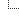
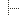
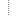

| 大剑 太刀 片手剑 双剑 大锤 狩猎笛 长枪 铳枪 弓 |
| 名称 | 锋利度 | 攻击力 | 属性 | 会心率 | 插孔 | 稀有度 | 价格 | 素材1 | 素材2 | 素材3 | 素材4 |
|---|---|---|---|---|---|---|---|---|---|---|---|
| 铁锤 | 312 | 0% | ーーー | 1 | 1150z | 铁矿石x4 | |||||
| 铁锤改 | 364 | 0% | ーーー | 1 | 1500z | 铁矿石x6 | |||||
| 战锤 | 416 | 0% | ーーー | 2 | 2830z | 铁矿石x10 | 阳光石x2 | ||||
| 战斗权杖 | 520 | 0% | ーーー | 2 | 4520z | 铁矿石x15 | 阳光石x5 | ||||
| 铁之打击锤 | 624 | 0% | ーーー | 3 | 8870z | 燕雀石x9 | 铁矿石x21 | 阳光石x10 | |||
| 铁之冲击锤 | 728 | 0% | ーーー | 4 | 13600z | 燕雀石x16 | 铁矿石x34 | 光水晶x1 | |||
| 禁闭之锤 | 624 | 麻痹190 | 0% | 〇ーー | 4 | 12980z | 燕雀石x12 | 雷光虫x11 | 橡胶质的皮x2 | ||
| 束缚立方 | 780 | 麻痹280 | 10% | 〇ーー | 4 | 31460z | 燕雀石x22 | 雷光虫x28 | 电气袋x9 | ||
| 刺锤 | 468 | 0% | ーーー | 2 | 3830z | 铁矿石x15 | 针果x10 | 增强剂x3 | |||
| 刺锤改 | 572 | 0% | ーーー | 2 | 6740z | 铁矿石x20 | 针果x15 | 营养剂Ｇx5 | |||
| 水晶石 | 676 | 0% | 〇ーー | 4 | 10120z | 光水晶x1 | 燕雀石x8 | 宝石券x3 | |||
| 水晶新星 | 780 | 0% | 〇ーー | 4 | 15220z | 光水晶x1 | 燕雀石x15 | 冰结晶x8 | |||
| 大新星 | 936 | 雷300 | 0% | 〇〇ー | 6 | 123150z | 耀水晶x3 | 灵鹤石x35 | 麒麟的雷角x5 | ||
| 名称 | 锋利度 | 攻击力 | 属性 | 会心率 | 插孔 | 稀有度 | 价格 | 素材1 | 素材2 | 素材3 | 素材4 |
| 骨锤 | 364 | 0% | ーーー | 1 | 950z | 龙骨【小】x4 | |||||
| 骨锤改 | 416 | 0% | ーーー | 1 | 1890z | 龙骨【小】x6 | |||||
| 独眼巨人之锤 | 468 | 0% | ーーー | 2 | 2310z | 大块骨x2 | 龙骨【小】x7 | ||||
| 阿特拉斯之锤 | 572 | 0% | ーーー | 2 | 3920z | 大块骨x3 | 龙骨【小】x11 | ||||
| 怪鸟之颚 | 676 | 0% | ーーー | 3 | 6430z | 巨大的喙x1 | 尖锐的爪x6 | 怪物的体液x4 | |||
| 怪鸟喙击 | 728 | 10% | 〇〇ー | 4 | 15580z | 怪鸟的耳x2 | 极彩色的毛x2 | 怪物的体液x15 | |||
| 残暴之颚 | 780 | 0% | 〇ーー | 3 | 11370z | 青怪鸟的甲壳x8 | 青怪鸟的鳞x4 | 粘着蝗虫x6 | |||
| 恶毒怪兽 | 832 | 毒260 | 0% | 〇ーー | 5 | 24300z | 毒怪鸟的头x1 | 燕雀石x17 | 毒袋x6 | ||
| 死亡毒液锤 | 936 | 毒260 | 0% | 〇ーー | 6 | 78600z | 毒怪鸟的头x1 | 橡胶质的上皮x7 | 灵鹤石x25 | ||
| 碎颅 | 520 | 0% | ーーー | 3 | 3190z | 龙骨【中】x2 | 尖锐的爪x10 | 怪物的体液x1 | |||
| 碎颅改 | 572 | 0% | ーーー | 3 | 5340z | 龙骨【中】x4 | 鱼龙的牙x12 | 怪物的体液x2 | |||
| 角龙尾 | 728 | 防御+10 | 0% | ーーー | 4 | 12690z | 角龙的尻尾x1 | 角龙的甲壳x2 | 燕雀石x8 | ||
| 破锤禁闭 | 832 | 防御+14 | 0% | ーーー | 4 | 31200z | 角龙的尻尾x3 | 角龙的甲壳x8 | 粘着蝗虫x21 | ||
| 双角魔锤 | 884 | 防御+18 | 0% | ーーー | 6 | 50000z | 真红之角x1 | 黑卷角x1 | 黑角龙的坚壳x6 | ||
| 角龙锤混沌造就者 | 936 | 防御+20 | 0% | ーーー | 7 | 120000z | 优质的弯角x2 | 黑角龙的尻尾x6 | 龙玉x1 | ||
| 雪狮头锤 | 624 | 冰260 | 0% | ーーー | 4 | 15500z | 雪狮子的牙x2 | 雪狮子的毛x6 | 谜之头骨x1 | ||
| 雪狮头锤改 | 728 | 冰370 | 0% | ーーー | 4 | 25430z | 雪狮子的牙x3 | 雪狮子的尻尾x2 | 煌甲虫x5 | ||
| 雪狮巨头 | 832 | 冰400 | 0% | ーーー | 6 | 87230z | 雪狮子的锐牙x7 | 雪狮子的刚毛x10 | 达人的髑髅x1 | ||
| 骨斧 | 624 | 0% | 〇ーー | 2 | 4390z | 龙骨【中】x6 | 怪物的体液x1 | ||||
| 宽骨斧 | 780 | 0% | 〇〇ー | 2 | 8980z | 龙骨【大】x5 | 怪物的体液x3 | ||||
| 名称 | 锋利度 | 攻击力 | 属性 | 会心率 | 插孔 | 稀有度 | 价格 | 素材1 | 素材2 | 素材3 | 素材4 |
| 巨大锤 | 624 | 防御+8 | 0% | 〇ーー | 3 | 6780z | 铠龙的甲壳x4 | 岩龙的甲壳x3 | 燕雀石x11 | ||
| 巨大锤改 | 728 | 0% | 〇ーー | 3 | 9180z | 铠龙的甲壳x6 | 岩龙的甲壳x5 | 燕雀石x16 | |||
| 溶解锤 | 832 | 火190 | 0% | 〇ーー | 5 | 31500z | 黑铠龙的甲壳x8 | 黑铠龙的头壳x1 | 红莲石x8 | ||
| 溶解锤【炼狱】 | 884 | 火310 | 0% | 〇ーー | 6 | 65190z | 黑铠龙的坚壳x12 | 黑铠龙的头壳x2 | 铠龙的骨髓x3 | ||
| 甲壳锤 | 780 | 防御+8 毒160 | 0% | 〇〇ー | 4 | 15780z | 岩龙的甲壳x8 | 龙牙x15 | 毒袋x5 | ||
| 重力锤 | 884 | 防御+14 毒180 | 0% | 〇〇ー | 4 | 52220z | 岩龙的甲壳x12 | 火龙的翼爪x8 | 雌火龙的棘x1 | ||
| 名称 | 锋利度 | 攻击力 | 属性 | 会心率 | 插孔 | 稀有度 | 价格 | 素材1 | 素材2 | 素材3 | 素材4 |
| 铁砧锤 | 676 | 防御+4 | 0% | 〇ーー | 4 | 19740z | 辉龙石x4 | 燕雀石x15 | 铁矿石x50 | ||
| 激锤猛攻 | 832 | 防御+6 | 0% | 〇ーー | 4 | 38750z | 辉龙石x10 | 燕雀石x30 | 铁矿石x99 | ||
| 战争践踏 | 936 | 防御+7 | 0% | 〇〇ー | 6 | 53720z | 辉龙石x15 | 灵鹤石x30 | 阳光石x30 | ||
| 战争怒击 | 1040 | 防御+8 | 0% | 〇〇ー | 6 | 75800z | 辉龙石x18 | 灵鹤石x60 | 阳光石x60 | ||
| 鬼铁 | 832 | 10% | 〇ーー | 6 | 30000z | 灵鹤石x10 | 黄速龙王的头x1 | 蛇龙的头x1 | |||
| 鬼铁丸 | 884 | 20% | 〇ーー | 7 | 120000z | 灵鹤石x20 | 金火龙的坚壳x1 | 黄金之毛x1 | |||
| 名称 | 锋利度 | 攻击力 | 属性 | 会心率 | 插孔 | 稀有度 | 价格 | 素材1 | 素材2 | 素材3 | 素材4 |
| 龙虾重踏 | 624 | 水200 | 0% | ーーー | 6 | 15780z | 水龙的上鳞x1 | 虾之大壳x1 | 虾之小壳x1 | 棒状之骨x1 | |
| 帝王龙虾重踏 | 780 | 水230 | 0% | ーーー | 6 | 35880z | 虾之巨大壳x1 | 女王虾x3 | |||
| 名称 | 锋利度 | 攻击力 | 属性 | 会心率 | 插孔 | 稀有度 | 价格 | 素材1 | 素材2 | 素材3 | 素材4 |
| 锚锤 | 624 | 水290 | 0% | 〇ーー | 4 | 15000z | *船老大赠送* | ||||
| 碎击锚 | 780 | 水340 | 0% | 〇〇ー | 5 | 28410z | 豪腕之锁x1 | 水龙的鳍x2 | 星铁x3 | ||
| 名称 | 锋利度 | 攻击力 | 属性 | 会心率 | 插孔 | 稀有度 | 价格 | 素材1 | 素材2 | 素材3 | 素材4 |
| 龍头盖棍 | 624 | 0% | 〇〇ー | 6 | 11400z | 达人的髑髅x1 | 龙头壳x4 | 古龍骨x7 | 怪物的浓汁x5 | ||
| 上古遗物 | 780 | 0% | 〇〇〇 | 6 | 31250z | 龙头壳x6 | 古龍骨x15 | 粘着蝗虫x20 | |||
| 名称 | 锋利度 | 攻击力 | 属性 | 会心率 | 插孔 | 稀有度 | 价格 | 素材1 | 素材2 | 素材3 | 素材4 |
| 岩龙打击 | 832 | 0% | ーーー | 6 | 15000z | 太古的大块* | |||||
| 岩龙怒击 | 936 | 0% | ーーー | 6 | 46850z | 岩龙的坚壳x15 | 白鸠石x7 | 龙玉x1 | |||
| 名称 | 锋利度 | 攻击力 | 属性 | 会心率 | 插孔 | 稀有度 | 价格 | 素材1 | 素材2 | 素材3 | 素材4 |
| 严重风化的槌 | 780 | 0% | ーーー | 6 | 10000z | 太古的大块* | |||||
| 风化的槌 | 884 | 0% | ーーー | 6 | 20000z | 钢之龍鳞x15 | |||||
| 律动・核心 | 1040 | -20% | ーーー | 7 | 42500z | 钢之龍鳞x20 | 古龍的血x1 | ||||
| 钢冰棍 | 936 | 冰290 | 0% | ーーー | 7 | 75000z | 钢龍的坚壳x6 | 钢龍的尻尾x1 | 珍稀丽金龟x4 | ||
| 伟岸＝达奥拉 | 988 | 冰330 | 0% | ーーー | 7 | 150000z | 钢龍的坚壳x12 | 钢龍的尖爪x2 | 钢龍的宝玉x1 | ||
| 名称 | 锋利度 | 攻击力 | 属性 | 会心率 | 插孔 | 稀有度 | 价格 | 素材1 | 素材2 | 素材3 | 素材4 |
| 严重锈蚀的槌 | 624 | 0% | ーーー | 1 | 2500z | 大锈块* | |||||
| 锈蚀的槌 | 676 | 0% | ーーー | 1 | 5000z | 大地的结晶x20 | |||||
| 龍息・核心 | 936 | -20% | ーーー | 5 | 35470z | 大地的结晶x40 | 古龍的血x1 | ||||
| 硬玉权杖 | 728 | 火260 | 0% | ーーー | 5 | 29730z | 炎妃龍的角x3 | 炎妃龍的甲壳x3 | 红莲石x7 | ||
| 翡翠权杖 | 780 | 火300 | 0% | 〇ーー | 5 | 58750z | 炎妃龍的角x3 | 炎妃龍的甲壳x7 | 古龍的血x2 | ||
| 娜娜＝托莉 | 832 | 火370 | 0% | 〇ーー | 7 | 150000z | 炎妃龍的角x6 | 炎龍的尘粉x3 | 炎龍的宝玉x1 | ||
| 名称 | 锋利度 | 攻击力 | 属性 | 会心率 | 插孔 | 稀有度 | 价格 | 素材1 | 素材2 | 素材3 | 素材4 |
| 骨块 | 416 | 0% | ーーー | 1 | 840z | 谜之骨x3 | |||||
| 大骨块 | 728 | 0% | ーーー | 1 | 1050z | 谜之骨x6 | |||||
| 名称 | 锋利度 | 攻击力 | 属性 | 会心率 | 插孔 | 稀有度 | 价格 | 素材1 | 素材2 | 素材3 | 素材4 |
| 铁拳 | 988 | -20% | 〇ーー | 7 | 100000z | 石像之拳x1 | 辉龙石x6 | ||||
| 远古打击 | 1092 | -20% | 〇〇ー | 7 | 150000z | 石像之拳x1 | 辉龙石x8 | 白鸠石x11 | |||
| 名称 | 锋利度 | 攻击力 | 属性 | 会心率 | 插孔 | 稀有度 | 价格 | 素材1 | 素材2 | 素材3 | 素材4 |
| 野猪头锤 | 520 | 0% | 〇ーー | 3 | 4830z | 大猪的皮x2 | 大野猪的头x1 | 大块骨x1 | |||
| 野猪牙锤 | 572 | 0% | 〇〇ー | 3 | 7860z | 大野猪的头x1 | 大块骨x5 | 鬼人药x1 | |||
| 名称 | 锋利度 | 攻击力 | 属性 | 会心率 | 插孔 | 稀有度 | 价格 | 素材1 | 素材2 | 素材3 | 素材4 |
| 工房试制品枪锤 | 676 | 火200 | 0% | ーーー | 4 | 27800z | 红莲石x4 | 燕雀石x20 | 火龙的骨髓x1 | 爆药x20 | |
| 死亡左轮 | 780 | 火240 | 0% | 〇〇ー | 4 | 32690z | 辉龙石x15 | 火龙的骨髓x2 | 红莲石x4 | ||
| 正式采用机械锤 | 936 | 火290 | 0% | 〇〇ー | 6 | 69800z | 红莲石x4 | 灵鹤石x20 | 怪物的浓汁x2 | ||
| 名称 | 锋利度 | 攻击力 | 属性 | 会心率 | 插孔 | 稀有度 | 价格 | 素材1 | 素材2 | 素材3 | 素材4 |
| 电击熊 | 520 | 雷280 | 0% | ーーー | 4 | 523z | 电击券x4 | ||||
| 电击熊Ｇ | 780 | 雷420 | 0% | ーーー | 6 | 550z | 电击券x5 | 金狮子的尖角x1 | |||
| 名称 | 锋利度 | 攻击力 | 属性 | 会心率 | 插孔 | 稀有度 | 价格 | 素材1 | 素材2 | 素材3 | 素材4 |
| 黑带大锤 | 780 | 0% | 〇〇〇 | 4 | 10130z | 大锤券x10 | 永远的硬币x10 | 达人硬币x10 | 铠龙的甲壳x3 | ||
| 达人大锤 | 884 | 防御+2 | 0% | 〇〇〇 | 6 | 21560z | 大锤券x20 | 牙兽的硬币x6 | 金火龙的坚壳x3 | ||
| 名称 | 锋利度 | 攻击力 | 属性 | 会心率 | 插孔 | 稀有度 | 价格 | 素材1 | 素材2 | 素材3 | 素材4 |
| 锤【乌】 | 780 | 0% | 〇ーー | 5 | 18470z | 尖锐的喙x1 | 黑狼鸟的耳x2 | 黑狼鸟的鬣毛x4 | 龙骨【大】x3 | ||
| 锤【狼】 | 884 | 0% | 〇ーー | 5 | 41500z | 尖锐的喙x3 | 黑狼鸟的鬣毛x10 | 大力神王虫x18 | |||
| 名称 | 锋利度 | 攻击力 | 属性 | 会心率 | 插孔 | 稀有度 | 价格 | 素材1 | 素材2 | 素材3 | 素材4 |
| 黑猫锤 | 624 | 麻痹240 | 0% | ーーー | 4 | 15000z | 辉龙石x2 | 钢龍的尻尾x1 | 肉球的图章x5 | ||
| 白猫锤 | 728 | 麻痹310 | 0% | 〇ーー | 6 | 25000z | 灵鹤石x20 | 缤纷坚果x2 | 肉球的图章x7 | ||
| 名称 | 锋利度 | 攻击力 | 属性 | 会心率 | 插孔 | 稀有度 | 价格 | 素材1 | 素材2 | 素材3 | 素材4 |
| 龍灭 | 780 | 龍170 | 0% | ーーー | 5 | 31680z | 老山龍的大爪x1 | 老山龍的鳞x5 | 龙骨【大】x3 | ||
| 龍破 | 884 | 龍330 | 0% | ーーー | 5 | 40160z | 老山龍的大爪x2 | 老山龍的甲壳x3 | 古龍的血x2 | ||
| 龍坏棍 | 988 | 龍410 | 0% | ーーー | 7 | 120000z | 老山龍的苍甲壳x5 | 老山龍的红玉x1 | 耀水晶x3 | ||
| 名称 | 锋利度 | 攻击力 | 属性 | 会心率 | 插孔 | 稀有度 | 价格 | 素材1 | 素材2 | 素材3 | 素材4 |
| 邪龍破碎锤 | 832 | 龍100 | 0% | ーーー | 7 | 100000z | 黑龍的角x2 | 黑龍的甲壳x6 | 战友之绊x10 | 战友之证x5 | |
| 火神破碎者 | 988 | 龍240 | 0% | ーーー | 7 | 150000z | 黑龍的角x3 | 黑龍的眼x2 | 钢龍的宝玉x3 | ||
| 祖龍破碎者 | 884 | 防御+8 龍350 | 0% | ーーー | 7 | 250000z | 祖龍的角x5 | 黑龍的魔眼x2 | 炎龍的宝玉x1 | ||
| 名称 | 锋利度 | 攻击力 | 属性 | 会心率 | 插孔 | 稀有度 | 价格 | 素材1 | 素材2 | 素材3 | 素材4 |
| 晚安熊 | 260 | 睡眠200 | 0% | ーーー | 4 | 5800z | 蛋券x1 | 宝石券x1 | 星铁x1 | ||
| 金猫锤 | 676 | 麻痹280 | 0% | 〇〇ー | 6 | 30000z | 肉球的印鉴x20 | 金火龙的上鳞x3 | 王族花金龟x8 | ||
| 生死悲号 | 1144 | 防御+16 龍380 | 0% | ーーー | 7 |